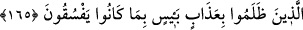

hatırlatma ve tebliğden vazgeçmeyen diğer topluluğa dediler ki: “Allah’ın helâk
edeceği”, köklerini kesip yeryüzünü onlardan temizleyeceği “yâhut” bir defada helâk
etmeyip peyderpey “şiddetli bir şekilde azab edeceği bir kavme artık ne diye öğüt
veriyorsunuz?” dedi.
Ayetin kalan kısmından anlaşıldığına göre burada söz konusu edilen azab, dünyadaki
azabdır. Topluluklardan birinin diğerine bu sözü söylemesi, nasihatı inkar etmeleri ve
günaha rıza göstermeleri sebebiyle değil, artık bu günahkâr kimselere öğüt vermenin
hiçbir fayda sağlamayacağını kesin bir dille ifade etmek içindir.
Öğüt vermeye devam edenler “dediler ki: “Rabb’inize mazeret (beyan edebilmek)
için,” yani Allah Teâlâ’ya arz edeceğimiz mazereti büyütmek için.
Mâzeret, özür beyan etmek demektir. İnsanın “Yapmadım” veya “Şu sebepten dolayı
yaptım” yâhut “Yaptım, fakat bir daha yapmayacağım” şeklindeki ifadelerle işlediği
günahı affetirecek sebepler araması demektir. Üçüncü ifâde aslında tevbedir. Her tevbe,
özürdür. Ama her özür, tevbe değildir. Mazeretin, “özür dileme” mânâsında olduğu da
söylenmiştir. Meselâ: “İşlediğim suçtan dolayı falana özür diledim.” denir. Özür
dileyen kişi, haklı da haksız da olabilir. (Tâcü’l-masâdır’da böyle geçmektedir.)
Sa’di (k.s.) derki :
Mahşer günü kahr ile hitap edecek olsa
Nebilerin elinden ne gelir?
Lütfun üzerindeki perdeyi kaldır
Çünkü eşkıyaların bile bağışlanma ümidi var
“Bir de belki sakınırlar diye” yani az da olsa sakınırlar ve günahları terk ederler
ümidiyle öğüt veriyoruz. Çünkü akıllı insandan beklenen, apaçık olan doğruyu kabul
etmesidir. Bundan ümit kesmek ise ancak bu kimselerin helak edilmelerinden sonra söz
konusudur.
“...ne diye öğüt veriyorsunuz?” diyen topluluğun helâk olanlara dâhil olmadığı da
açıktır. Aksi halde onlara hitaben “belki sakınırsınız diye.” buyurulması gerekirdi.
165. Onlar kendilerine yapılan uyarıları unutunca, biz de kötülükten menedenleri
kurtardık, zulmedenleri de yapmakta oldukları kötülüklerden ötürü şiddetli bir
azap ile yakaladık.
“Ne zaman ki onlar, kendilerine hatırlatılanı unuttular.” yani, bir kimsenin unuttuğu
şeyi terketmesi gibi salihlerin kendilerine verdiği nasihatleri ve hatırlatmaları terk
ettiler ve onlardan akıllarında hiçbir şey kalmayacak derecede yüz çevirdiler “biz de